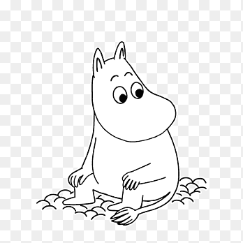
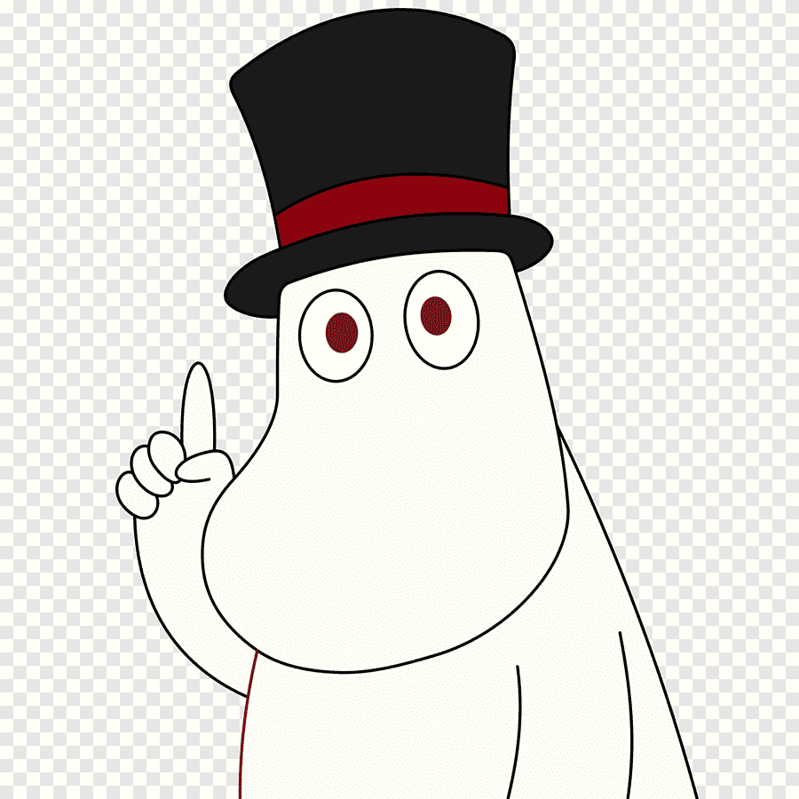
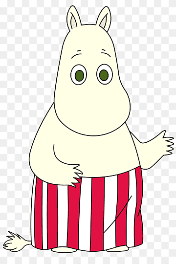

| INICIO | PERSONAJES | CONTACTO |
Una gran variedad de personajes aparece en la serie Moomin de Tove Jansson. Sin embargo, en esta ocasión solo mencionaremos a la familia y amigos cercanos.
| MOOMIN | PAPÁ MOOMIN | MAMÁ MOOMIN |
|---|---|---|
|  |  |  |
| Es el protagonista de la mayoría de los libros. Muchas personas creen que Moomin está enamorado de Snorkmaiden porque tienen una relación muy dulce y romántica en los primeros libros. Sin embargo, posteriormente sus apariciones con Snorkmaiden son menos frecuentes y después de Moominland Midwinter, Moomin se refiere a Snorkmaiden simplemente como una amiga. |
Es el padre de Moomin. Quedó huérfano cuando era joven. Lleva consigo siempre un sombrero de copa. Su vida está marcada por el intento de escribir sus memorias, aunque la falta de motivación muchas veces le supone un problema y eso provoca que esté continuamente intentando buscar nuevas vivencias para encontrar inspiración. |
Es la madre de Moomin. Casi nunca aparece sin su bolso, que contiene cosas esenciales como lana. Ella construye botes cada verano. Siempre es amable y servicial con todo el que llega al valle o a su casa e intenta ayudar en todo lo que puede. |